01/04
$15K+
Direct revenue generated for a self-founded brand through retail partnerships and market activations.
End-to-end support across brand, web, and marketing—bringing strategy, design, and execution into one aligned system.
George Adams
Creative Director, Web Designer
Work
Stories, designs and systems that connect real people.
Stories, designs and systems that connect real people.
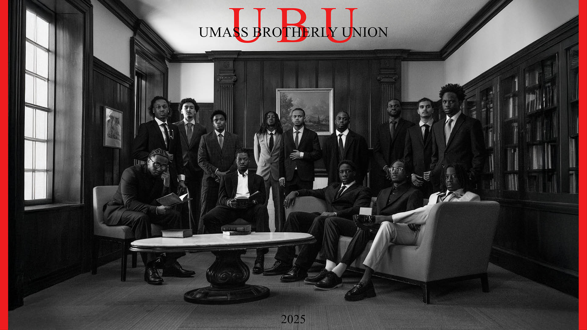
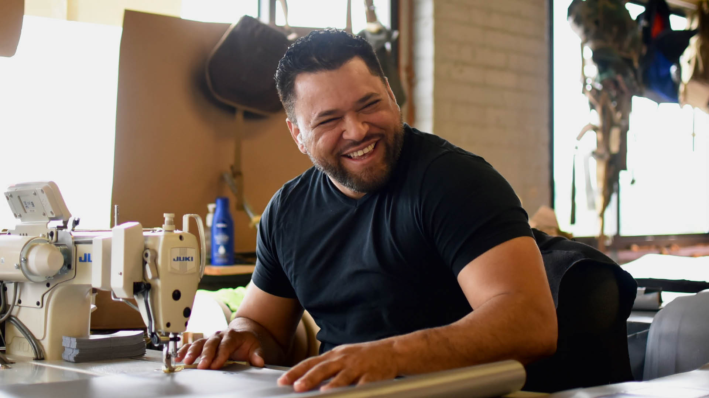
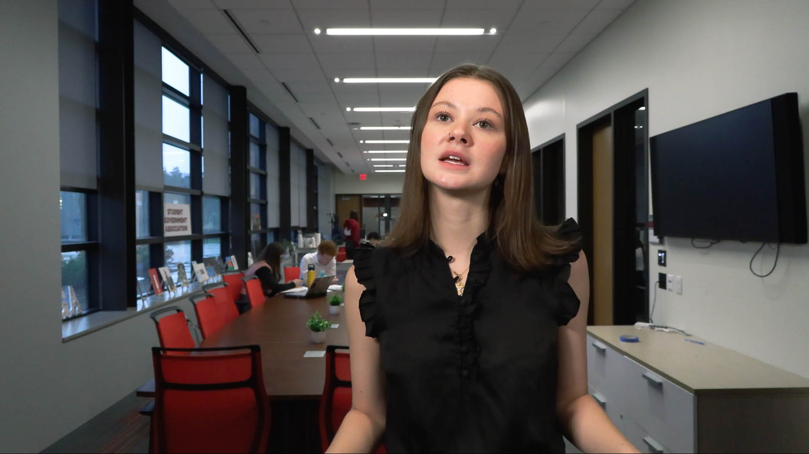
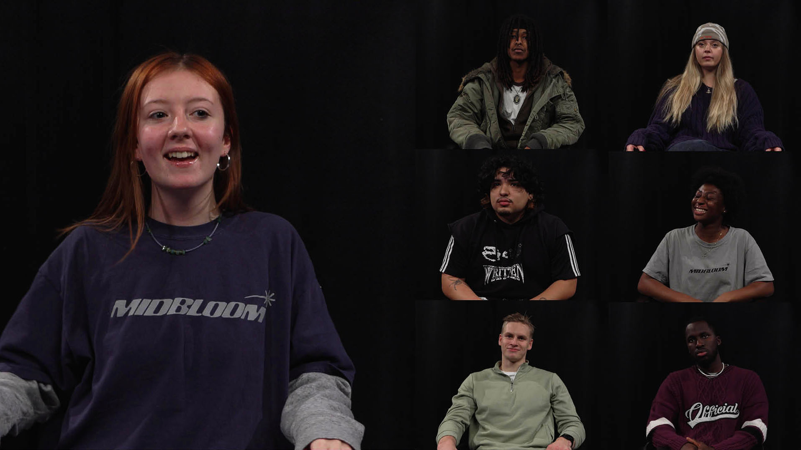
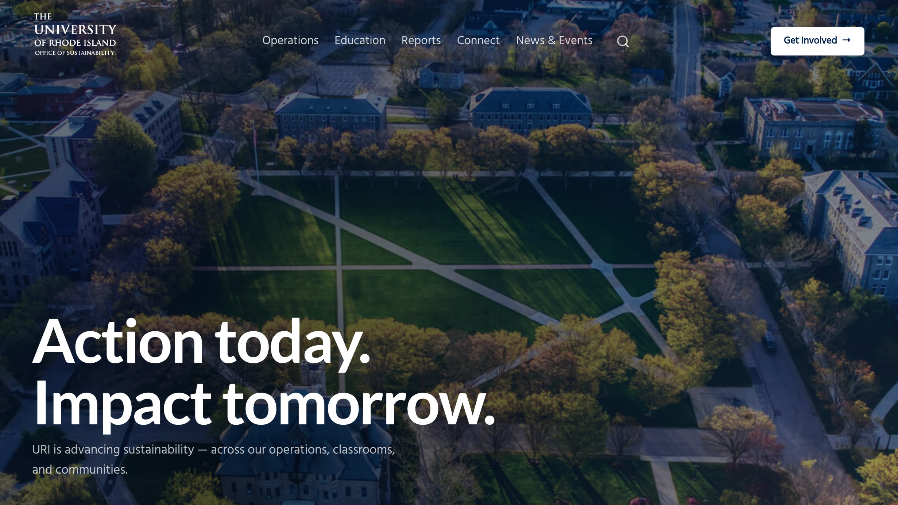


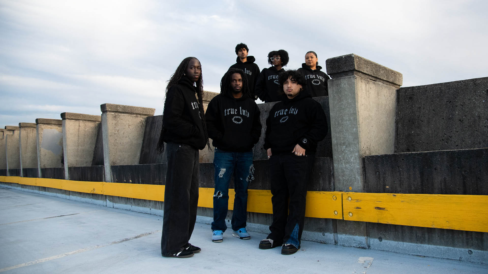
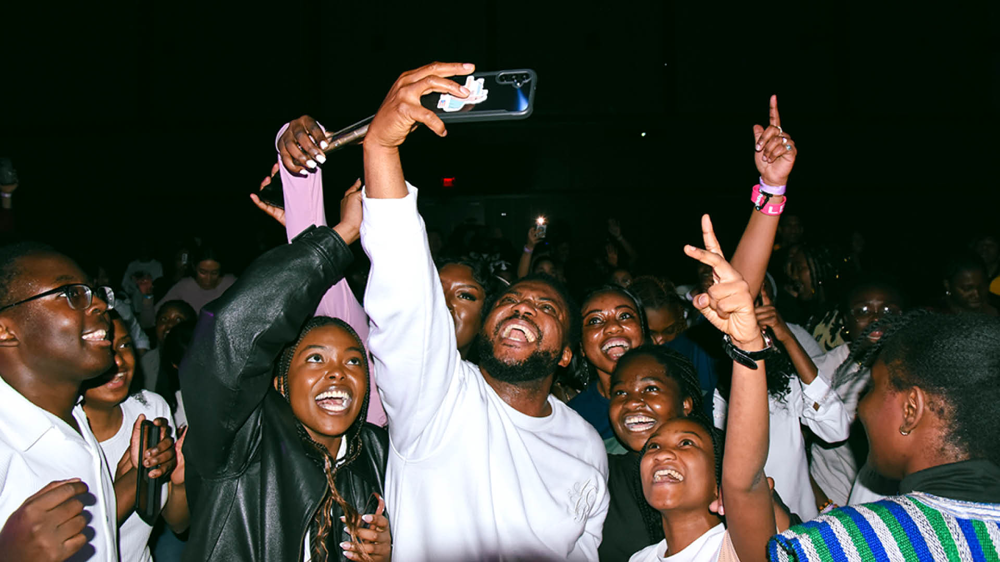
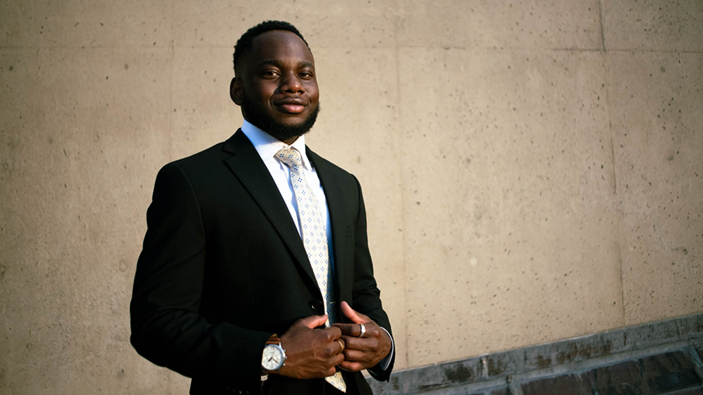
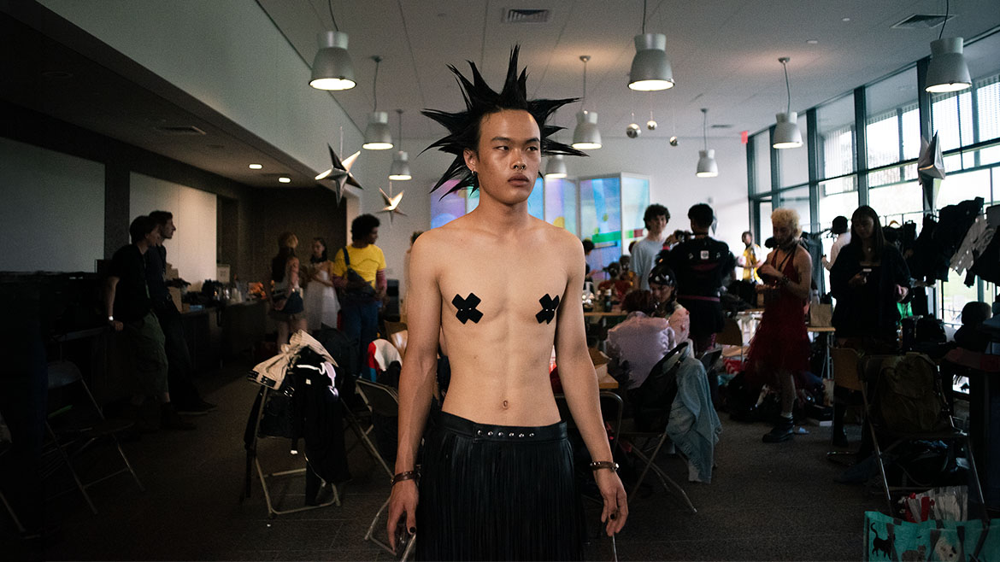
Services
A direct partnership, from thinking to execution.
A direct partnership, from thinking to execution.
-
Creative DirectionDefine how your brand looks and feels.
-
Brand DevelopmentClarify what you do and why it matters.
-
Web DesignBuild clear, credible, conversion-focused websites.
-
Content ProductionReach your audience with story-driven content.
-
Marketing SystemsTurn scattered efforts into a clear, winning system.
About
Creative director, designer, and artist from Providence, RI.
Creative director, designer, and artist from Providence, RI.
Studio
Thinking, in progress.
Thinking, in progress.
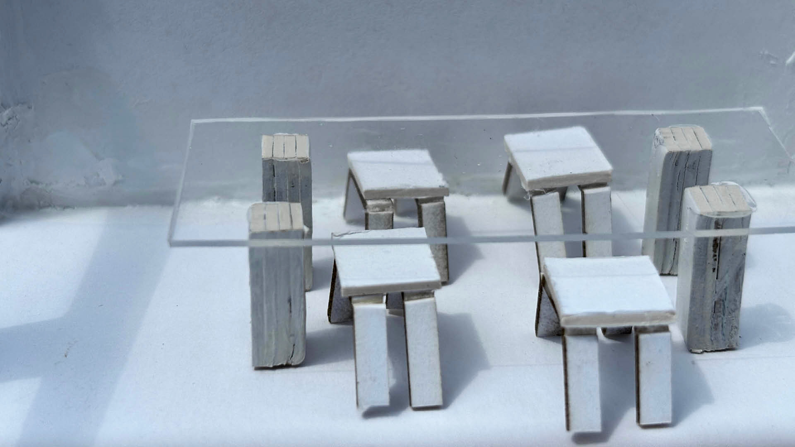
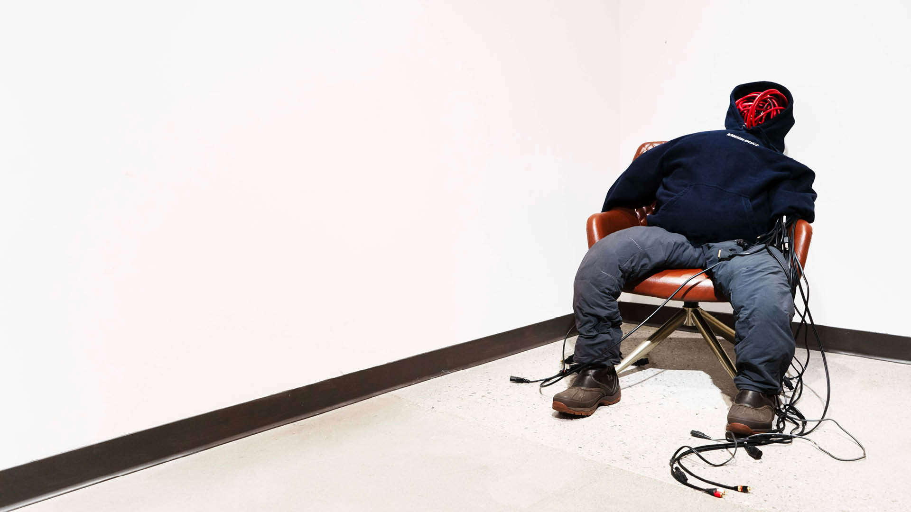
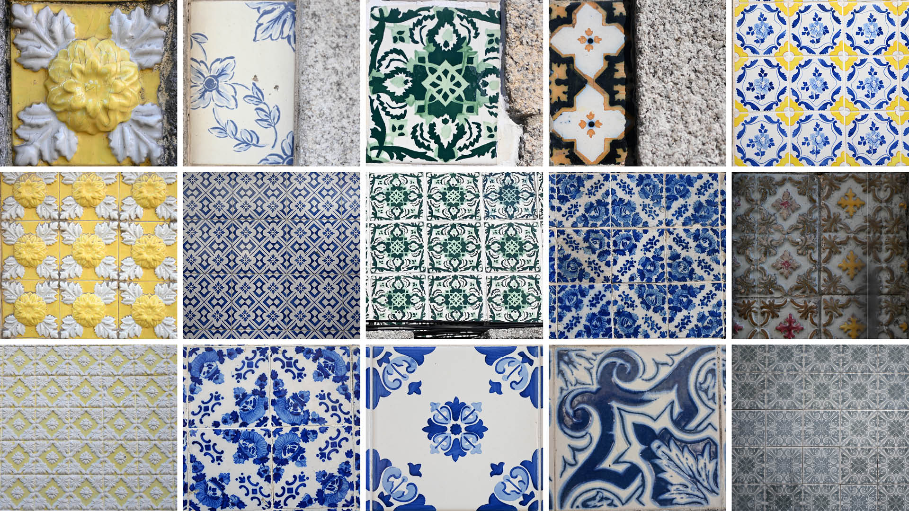